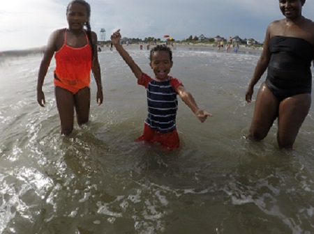

This summer my family of four and another family that we are really close to went on a Disney Cruise for 6 days. In total, there was 8 of us that when on the cruise. On the cruise, there were clubs for kids, teens, and adults. There was also pools and a giant water slide that went around the ship. On of my favorite things we did on the cruise was an investigation hunt game we played. In this game, you had to go to different motion picture frames that were located over the whole cruise, when you reached one you were given a mini game to play if you completed it then you earned a clue. Overall, my family completed all three of the investigations. I also enjoyed going to the Bahamas and to Disney's private island. The private island had a beach where you could bike ride, swim with sting rays, and much more. They had fresh mango which was amazing! In the end, there is too much to explain, but overall I had a great time on the Disney Cruise.

Another thing I did this summer was visit Charlestown with my mom, sister, aunt, and two baby cousins. While we were in Charlestown we went to the beach, Charlestown beach is one nice beach. It was shallow enough for my 5-year-old baby cousin to stand in, but it still had big waves that he and I enjoyed "jumping" over. We also went shopping at the local markets; I got a pair of earnings that we made out of a fence from one of the churches that used to be located in Charlestown. We also went to eat at this very popular seafood place called Hymans Seafood. The food there was delicious and there was a lot of it. We stayed in Charlestown for three days, but even though it was long I still had a great time!

I also went to a basketball camp this summer at Furman Unversity. At this camp, I got to play against different girls from different schools. In this camp, we worked with the basketball players who play at Furman. It was a week long camp and I stayed on campus. We had to wake up and be ready at 7:30. We had to walk around campus from the dining halls, to the gym, and to the dorms so we did a lot of walking. At the end of the camp, we got awards, basketballs from the camp, and shirts signed by the coach and the players.I had a lot of fun playing with and learning from the basketball players at Furman.